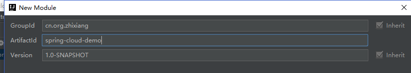
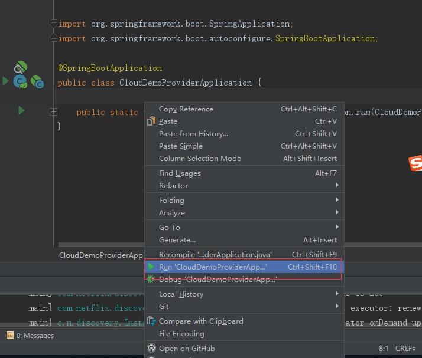
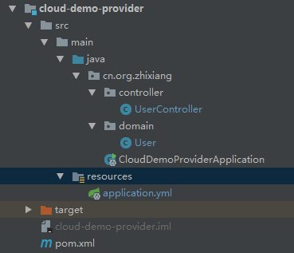

最近开始学习SpringCloud，在此把我学习的过程记录起来，跟大家分享一下，一起学习。想学习SpringCloud的同学赶快上车吧。
本次学习使用得SpringBoot版本为2.0.3.RELEASE，SpringCloud版本为Finchley.RELEASE
创建父Maven工程

我们把此项目当做我们项目的父项目，以后我们所有的子项目都应该继承这个项目，来看一下此项目的pom.xml文件都是依赖了什么
1 2 3 4 5 6 7 8 9 10 11 12 13 14 15 16 17 18 19 20 21 22 23 24 25 26 27 28 29 30 31 32 33 34 35 36 37 38 39 40 41 42 43 44 45 <? xml version="1.0" encoding="UTF-8" ?> <project xmlns ="http://maven.apache.org/POM/4.0.0" xmlns:xsi ="http://www.w3.org/2001/XMLSchema-instance" xsi:schemaLocation ="http://maven.apache.org/POM/4.0.0 http://maven.apache.org/xsd/maven-4.0.0.xsd" > <modelVersion > 4.0.0</modelVersion > <groupId > cn.org.zhixiang</groupId > <artifactId > spring-cloud-demo</artifactId > <version > 0.0.1-SNAPSHOT</version > <packaging > pom</packaging > <parent > <groupId > org.springframework.boot</groupId > <artifactId > spring-boot-starter-parent</artifactId > <version > 2.0.3.RELEASE</version > </parent > <dependencyManagement > <dependencies > <dependency > <groupId > org.springframework.cloud</groupId > <artifactId > spring-cloud-dependencies</artifactId > <version > Finchley.RELEASE</version > <type > pom</type > <scope > import</scope > </dependency > </dependencies > </dependencyManagement > <properties > <project.build.sourceEncoding > UTF-8</project.build.sourceEncoding > <project.reporting.outputEncoding > UTF-8</project.reporting.outputEncoding > <java.version > 1.8</java.version > </properties > <build > <plugins > <plugin > <groupId > org.springframework.boot</groupId > <artifactId > spring-boot-maven-plugin</artifactId > </plugin > </plugins > </build > </project >
创建服务提供者
右键项目名称：spring-cloud-demo，选择New–>Module,选择Maven，然后点击next，然后呢artifactId给项目取名为cloud-demo-provider，现在服务提供者项目就创建好了。因为接下来我们测试需要访问程序，所以接着我们引入所需的web依赖。
1 2 3 4 5 6 <dependencies > <dependency > <groupId > org.springframework.boot</groupId > <artifactId > spring-boot-starter-web</artifactId > </dependency > </dependencies >
2.在resources文件夹下新建application.properties或者application.yml（二者任选其一），添加如下配置:
properties文件这样写
1 2 spring.application.name =provider-demo server.port =8078
yml这样写
1 2 3 4 5 spring: application: name: provider-demoserver: port: 8078
spring.application.name呢，意思是给给项目起个名字叫做provider-demo
server.port呢，指定项目启动时的端口为8078
3.在Java文件夹下创建包cn.org.zhixiang（这个包名是我的网站域名的反转，大家可以自行定义）,在此包下新建CloudDemoProviderApplication类
1 2 3 4 5 6 7 8 9 10 11 package cn.org.zhixiang;import org.springframework.boot.SpringApplication;import org.springframework.boot.autoconfigure.SpringBootApplication;@SpringBootApplication public class CloudDemoProviderApplication { public static void main(String[] args) { SpringApplication.run(CloudDemoProviderApplication.class , args); } }
@SpringBootApplication注解呢是SpringBoot的一个组合注解，主要注解为@Configuration、@EnableAutoConfiguration、@ComponentScan
我们使用SpringBoot启动项目时一般都会使用此注解，一会启动项目的时候我们在这个类中右键选择run CloudDemoProviderApplication 就可以启动了

4.在cn.org.zhxiang包下新建包domain,在domain包中创建一个User实体类
1 2 3 4 5 6 7 8 9 10 11 12 13 14 15 16 17 18 19 20 21 22 23 24 25 26 27 28 29 public class User { private long id; private String name; private int age; public long getId () return id; } public void setId (long id) this .id = id; } public String getName () return name; } public void setName (String name) this .name = name; } public int getAge () return age; } public void setAge (int age) this .age = age; } }
5.在cn.org.zhxiang包下新建包controller,在controller包中创建一个类UserController
`
1 2 3 4 5 6 7 8 9 10 11 12 13 14 15 16 17 @RestController @RequestMapping("/user" ) public class UserController @GetMapping(value = "/getUser/{id}" ) public User getUser(@PathVariable Long id){ User user=new User(); user.setId(id); user.setName("张三" ); user.setAge(18 ); return user; } @GetMapping(value = "/getName" ) public String getName(){ return "张三" ; } }
@RestController注解呢，其实就是@ResponseBody ＋ @Controller的组合注解，@GetMapping呢，相当于@RequestMapping(value="", method = RequestMethod.GET)
现在我们这个Provider的项目的目录结构应该是这样的：

6.安装刚才所说的启动项目，打开浏览器访问http://localhost:8078/user/getUser/3 。如果浏览器返回一个json {“id”:3,“name”:“张三”,“age”:18}，那么就代表我们的服务提供者写好了。
创建服务消费者
2.创建cn.org.zhixiang包，创建CloudDemoConsumerApplication类。不同于提供者的是，这次启动类中需要增加一段代码
1 2 3 4 5 6 7 8 9 10 @SpringBootApplication public class CloudDemoConsumerApplication @Bean public RestTemplate restTemplate () return new RestTemplate(); } public static void main (String[] args) SpringApplication.run(CloudDemoConsumerApplication.class, args); } }
RestTemplate类呢，是一个对于HTTP请求封装的一个类，相信大家都知道我们使用原生API访问一个URL需要的代码是很多的，这个呢，就是一个封装简化的版本。
@Bean注解呢，其实就等同于以前在xml中配置的如下代码
`
1 2 3 <beans > <bean id ="restTemplate" class ="org.springframework.web.client.RestTemplate" /> </beans >
同样的，在此项目中增加一个User类，与提供者一样。
而UserController就不一样了
1 2 3 4 5 6 7 8 9 10 11 12 @RestController @RequestMapping ("/user" )public class UserController { @Autowired private RestTemplate restTemplate; @GetMapping ("/getUser/{id}" ) public User getUser(@PathVariable Long id){ return restTemplate .getForObject ("http://localhost:8078/user/getUser/" +id,User.class); } }
它的getUser方法没有自己实现，而是调用的服务提供者的getUser方法。
接着呢，我们首先启动服务提供者，然后再启动消费者，当我们访问http://localhost:8088/user/getUser/3 时同样也能取得结果，这样一个简单的SpringCloud项目的服务提供者和消费者就已经完成了。
GitHub：https://github.com/2388386839/spring-cloud-demo
码云：https://gitee.com/zhixiang_blog/spring-cloud-demo
如果对您有所帮助，请记得帮忙点一个star哦